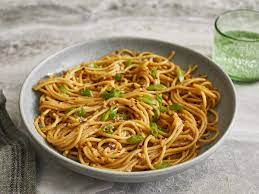

Garlic Noodles

Description
Garlic noodles are a savory snack that can be made almost entirely with shelf-stable ingredients!
Ingredients
- Garlic
- Pasta noodles
- Butter
- Oyster sauce
- Soy sauce
- Scallions
Steps
- Cook the pasta according to box instructions
- Slice the garlic thinly and cook in butter in a separate pot until light brown
- Add the oyster sauce, soy sauce, and scallions to the garlic
- Add in the cooked pasta and toss to combine